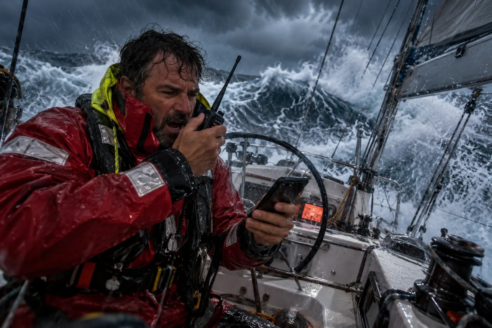
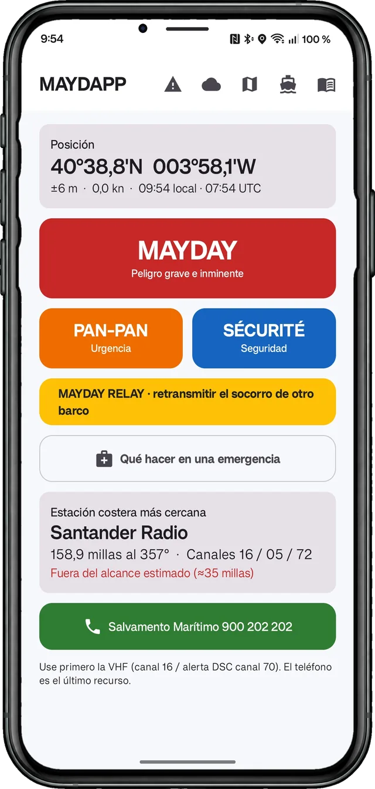
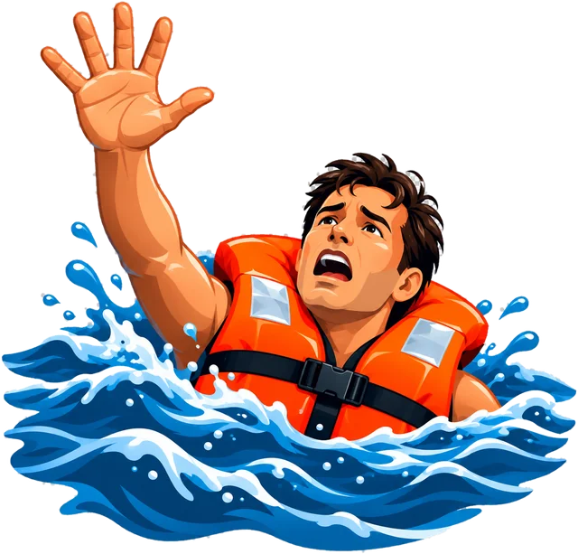

Tu llamada de socorro, lista para leer por radio.
Con nervios y con prisa es fácil olvidar la posición, el distintivo o el orden de la llamada. MAYDAPP prepara el guion completo con tu posición GPS, los datos de tu barco y el motivo. Tú pulsas el micrófono y lees, línea a línea.


Se prepara una vez en puerto. Se usa en segundos en el mar.
Rellena la ficha del barco
Nombre, distintivo de llamada, MMSI, tipo, eslora, color y personas a bordo. Se guarda solo en tu teléfono.
Elige la llamada y el motivo
MAYDAY, PAN-PAN, SÉCURITÉ o MAYDAY RELAY. Vía de agua, incendio, hombre al agua, orcas, avería… o escribe el tuyo.
Pulsa el micrófono y lee
El guion sale en el orden reglamentario, con la posición en palabras y la hora UTC. Si te piden deletrear, lo tienes a un toque.
Cuatro llamadas, cada una con su procedimiento.
Cada guion lleva las palabras de procedimiento, la identificación del barco, la posición, el peligro y la ayuda que necesitas. Termina con «Cambio» para que sueltes el micrófono y escuches.
La vida o el barco corren peligro. Ayuda inmediata.
Situación seria sin peligro inmediato para la vida.
Avisos a la navegación: objetos a la deriva, luces apagadas…
Cuando oyes un MAYDAY sin respuesta o el otro barco no puede llamar.
Posición como se dice por radio
Latitud y longitud en grados y minutos, escritas en palabras, y la referencia al faro más cercano.
40 grados 38,9 minutos norteDeletreo a un toque
El botón ABC muestra el nombre del barco con el alfabeto fonético internacional, como el distintivo.
Alfa Lima Bravo Alfa Tango…MMSI en grupos de tres
Más fácil de leer y de entender al otro lado, sin saltarse una cifra.
MMSI 111 122 222Hora UTC y hora local
La UTC va en el guion; la local, en pantalla, para que no tengas que calcular nada.
11:21 local · 09:21 UTCEspañol e inglés
Los guiones pueden salir en inglés para llamar a barcos extranjeros o en aguas internacionales.
This is ALBATROS…Cancelación
Si enviaste una alerta por error, la app te da también el guion para cancelarla.
Alerta enviada por error
Fichas paso a paso, basadas en las recomendaciones de Salvamento Marítimo.
Aparecen según el motivo de tu llamada, y también se pueden consultar antes de salir. Qué hacer, en qué orden y con qué medios.
Toda la costa española dentro de la app.
El mapa viene incluido y funciona sin datos. Muestra tu posición, la estación costera más cercana con su alcance VHF estimado y las capas que elijas: faros, puertos y marinas, y comunidades, ciudades y mares.
Toca una estación para ver su canal de trabajo, el canal de Salvamento Marítimo, el centro que la atiende y su teléfono. Cobertura: Península, Baleares, Canarias, Ceuta y Melilla.
El parte de AEMET de tu tramo de costa, primero.
MAYDAPP localiza tu zona y te muestra el parte costero oficial de AEMET, los avisos en vigor y la tendencia, con el resto de zonas del tramo debajo.
- Partes costeros de AEMET de todas las costas españolas, de Galicia a Canarias.
- Viento en el mapa. Partículas animadas y colores por intensidad, en nudos, con previsión para los próximos tres días.
- Olas. Altura, dirección y periodo del oleaje hasta la costa.
- Toca un punto y verás el viento o la altura de ola en ese lugar.
El viento y las olas son orientativos (modelo GFS de la NOAA) y no sustituyen al parte de AEMET.
Los radioavisos en vigor de tu zona.
Se descargan de Salvamento Marítimo y se filtran por tu posición: ejercicios militares, objetos a la deriva, buques de investigación, faros apagados… Toca uno para abrir el documento original.
Todo lo que te pueden preguntar, a mano.
- Estaciones costeras y centros de Salvamento Marítimo, de la más cercana a la más lejana, con canales, distancia y rumbo.
- Faros y puertos con buscador por nombre.
- Canales VHF de socorro y trabajo, y el alfabeto fonético internacional.
- Altura de tu antena en la ficha del barco, para estimar mejor el alcance de cada estación.
- Botón directo al 900 202 202 de Salvamento Marítimo, como último recurso.
Tus datos se quedan en tu teléfono.
Sin registro, sin publicidad y sin seguimiento. La posición y los datos del barco no salen del móvil. Cada dato de la app indica de dónde viene: Ministerio de Transportes, UIT, Salvamento Marítimo, AEMET, NOAA, OpenStreetMap y las autoridades portuarias.
Antes de salir a navegar.
¿La app hace la llamada por mí?
No. La llamada la haces tú por la radio VHF. MAYDAPP te da el texto exacto que tienes que leer, en el orden correcto.
¿Funciona sin cobertura?
Sí. Los guiones, la posición GPS, el mapa, las fichas de emergencia y la referencia funcionan sin datos. Los partes de AEMET, el viento, las olas y los radioavisos se descargan cuando hay conexión, así que conviene actualizarlos antes de salir.
¿Sustituye a la radio, a la LSD o a la radiobaliza?
No. Es una ayuda para preparar la llamada. En una emergencia usa siempre los medios oficiales: canal 16 de VHF, alerta LSD por el canal 70, radiobaliza, 900 202 202 o 112.
¿Es una aplicación oficial de Salvamento Marítimo?
No. MAYDAPP es una aplicación independiente de RDRP Studio. Usa datos públicos oficiales y cita su fuente dentro de la app.
¿Qué costa cubre?
La Península, Baleares, Canarias, Ceuta y Melilla, con sus estaciones costeras, faros, puertos y zonas de AEMET.
¿En qué idioma está?
La app está en español. Los guiones de radio pueden salir en español o en inglés.
¿Cuánto cuesta?
Pago único en Google Play. Sin suscripción y sin publicidad.
Importante. MAYDAPP es una ayuda para preparar la llamada. No sustituye a la radio VHF, a la LSD (DSC), a la radiobaliza ni a la formación reglamentaria, y no es una aplicación oficial de Salvamento Marítimo.
Los datos de estaciones, alcances y meteorología son orientativos. En caso de emergencia, usa siempre los medios oficiales: canal 16, LSD canal 70, 900 202 202 o 112.